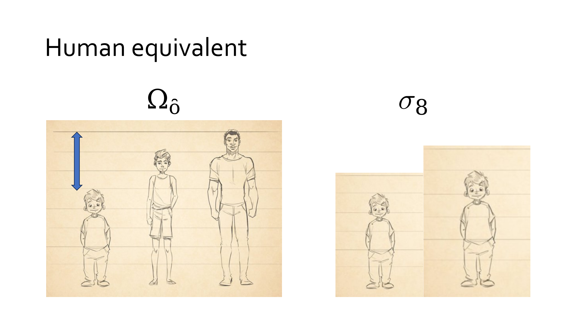
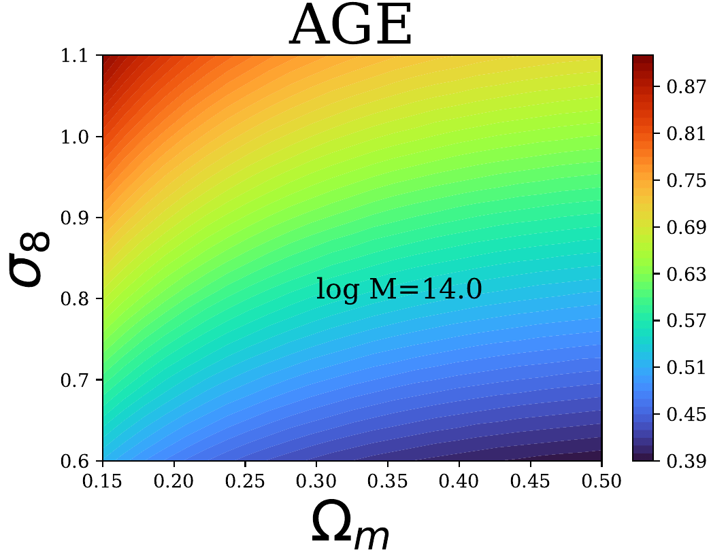
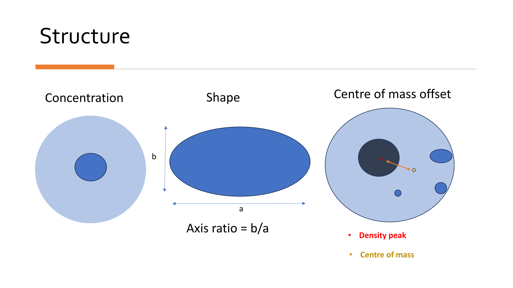
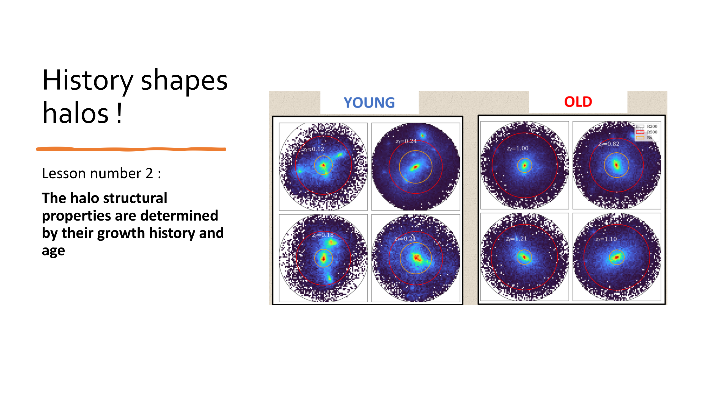
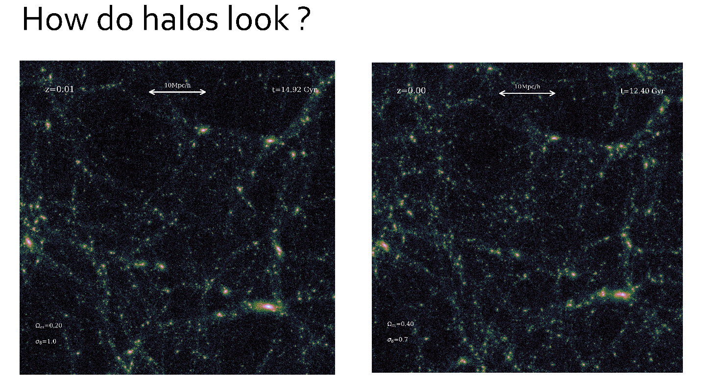
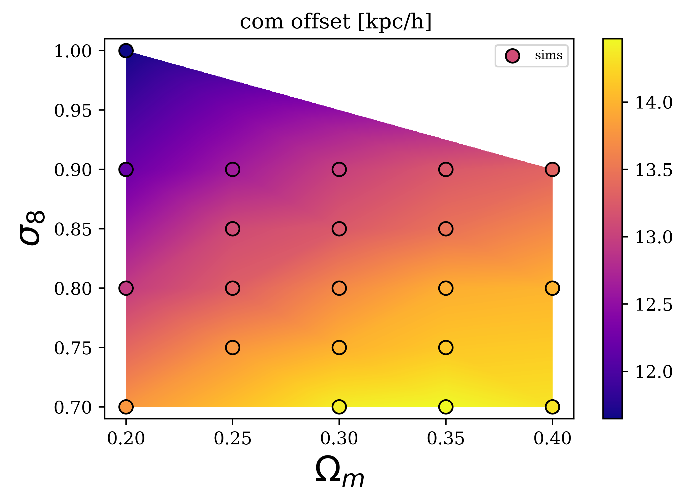

Yuba Amoura


Dedicated PhD, researcher with years of experience studying and analyzing complex astrophysical problems, python programming, and using statistical and visualisation tools to gather, clean and analyse telescope and simulation data.
I'm an Astrophysics PhD. I have experience in data analysis using Python. This includes everything from data preparation and modification, running simulations, statistical and regression methods, and data visualisation and presentation.
I also have a statistics/data science background; I studied in a data science masters where I had the opportunity to do projects for a classification competition and use a clustering algorithm.
I have had the opportunity to perfect my explanation and presentation skills through teaching and tutoring math, physics and chess and through the numerous presentations, I have had to make throughout my PhD.
-
The Cosmological Dependence of Cluster Age
2019-2021 - PhD project
University of Waterloo ( paper)
Abstract— Galaxy clusters are massive objects composed of hundreds or thousands of galaxies, hot gas and an extended dark matter (DM) halo. They are the largest gravitationally bound structures in the Universe. As such, they result from the growth and collapse of the highest peaks in the density perturbation field. Because fundamental properties of the Universe determine the statistics and evolution of those peaks, clusters can be used for cosmology. The most common method to do that is to use their abundance, which requires counting them in bins of mass and redshift (distance). But this has the disadvantage of not distinguishing between high peaks early, or large growth which would result in similar number of observed clusters today. However, in the first scenario clusters would form earlier than in the latter. I used analytical models to predict exactly how cluster age varies with cosmology, and then tested the results by analysing simulation data from different sources.


-
Technical skills involved
- Mathematical modelling of cluster formation
- Coding mathematical model in Python
- Data acquisition from publicly available simulations
- Analyzing, cleaning, and homogenising raw data from different sources with different formats and information (Python)
- Calculating ages for millions of clusters from simulation data (Python)
- Comparing to analytical model predictions (Python)
- Visualisation (Python)
-
Results
- Demonstrated that cluster age varies by 100% accross the Ωm and σ8 plane
- Found a new way to gain information about the Universe fundamental properties
- Demonstrated that the new method is complementary with existing methods using the abundance of clusters
- Predicted that this method, applied to data from forthcoming surveys (Euclid, Rubin, Roman) can constrain σ8 up to 10% accuracy
-
What cluster structure tells us about their age
2021-2023 - PhD project
University of Waterloo ( paper)
Abstract— Because clusters form in bottom-up hierarchical way through mergers to larger structures, properties of their internal structures are related to their growth history. Young clusters will have more substructure in them, be less concentrated, have non-spherical shapes and less relaxed. This allows to estimate their age by looking at how they look. I studied how different structural properties relate a variety of age indicators through a Principal Component Analysis on different age and structural properties calculated in a simulation I have run. I have found that concentration and the offset between the centre of mass and the point of highest density can predict cluster age with good accuracy.


-
Technical skills involved
- Running a simulation of the Universe with parameters tuned for the goal
- Using remote high performance computer clusters (Compute Canada)
- Extensive use of Unix (linux) and shell (bash) as well as job scheduler slurm
- Calculating and coding physical properties of clusters (Python)
- Fitting density profiles with a parametric and non-parametric (Maximum Likelihood) method (Python)
- Using Principal Component Analysis (PCA) on different structural and age properties (Python)
- Visualisation of clusters (Python)
-
Results
- Generated a data set of particle positions as well as cluster properties and ages. This data set has been and will be used by a many students for a variety of projects.
- Helped understand the fundamental nature of cluster formation history and which quantities describe it the best.
- Demonstrated correlations between several cluster structural properties and their age. These include, concentration, shape and centre of mass offset.
- Found a practical way to estimate cluster age from observations that can be applied to data from future cluster surveys (e.g. Euclid, Roman, Rubin)
-
Constraining cosmology with cluster structure
2021-2023 - PhD project
University of Waterloo ( paper)
Abstract— Since cluster age depends on cosmology and cluster age produces different internal structures, we can expect that we can constrain cosmological parameters, specifically Ωm-the amount of matter in the Universe- and σ8-how clumpy the matter distribution in the Universe is. I ran a set of 25 High-Resolution N-body cosmological simulations, producing more than 100Tb of data, each with different cosmological parameters. I found that the centre of mass offset, shape and concentration are sensitive to Ωm and σ8 and can be used to constrain cosmology.


Technical skills involved
- Running a set of 25 High Resolution simulations of the Universe
- Using remote high performance parallel computing clusters (Compute Canada). A total of 202 cpu-years was necessary to generate all the simulations.
- Automating data collection, transfer, cleaning, and post-processing of each simulation
- Optimizing code to efficiently calculate the physical properties of galaxy clusters for each of the 25 simulations. This involved fits and calculations for 300,000 objects for each of the 25 simulations (Python)
- Using interpolation methods (Python)
- Visualisation, creation of videos of the evolution of the universe with time
-
Results
- Generated a large (150Tb) data set including: simulation output at 119 different times in Universe age, dark matte halos at each time, structural properties of each. Repeated 25 times of each cosmology. This data is set to be the basis of many ongoing and future projects.
- Successfully demonstrated that cluster structure can be used to constrain cosmological parameters.
- Estimated the number of observed clusters necessary to use each structural property to have competitive constraints (around 100,000). This is less than the expected number of cluster detection from the Euclid space telescope.
- This new method of constraining cosmology is a new, innovative, complementary way to help gain insight in the properties of the Universe, understand dark matter halos, and solve the current tensions in cosmology.
-
Assessing the accuracy of the concentration measurements of galaxy clusters detected by the Euclid space telescope
Summer 2016
Institut d'Astrophysique de Paris (IAP)
Abstract— The Euclid space telescope is a European Space Agency (ESA) mission whose aim is to help understand the mysteries of Dark Matter and Dark Energy by looking at structures of the Universe and generating a 3D map of the structures within it. Among the structures Euclid will detect are Clusters of Galaxies, the largest gravitaionally bound objects in the Universe. In order to be ready to use the data the telescope will provide, tests using synthetic data are performed. My role was to use those simulations to measure the density profiles of galaxy clusters and compare them to an ideal case to assess of the accuracy of those measurements. This involved collecting and cleaning simulation data, finding the best model parameters for the density of profile of each cluster using a Maximum Likelihood estimator and minimisation routine in Python, as well as statistical tests such as the KS test. My tests lead to the discovery of faulty simulation data, which were subsequently removed, saving mistakes from all subsequent tests that would have used that simulation.
-
Indirect detection of Dark Matter using the Fermi-LAT source catalogs
Spring 2015
University of Amsterdam
Abstract— Little is known about the particle nature of Dark Matter, but the most common model is a Weakly Interactive Massive Particle (WIMP) that is not subject to the electromagnetic interaction. However, two WIMP particles can interact with each other and the resulting particles would emit radiation, that we can in theory detect. Because dark matter represents the skeleton of the structures of the Universe, dark matter clumps, called halos and subhalos, surround our galaxy and are typically also the host of smaller galaxies, called satellite galaxies. If dark matter is indeed composed of WIMPS, we would expect to detect gamma-ray emissions from the dark matter subhalos around our galaxy. These would appear as gamma-ray sources. It happens that in the Fermi-LAT source catalog, there are sources which are unidentified, and these are primary candidates for dark matter subhalos emitting gamma-ray. I studied these sources, calculating their luminosities by assigning them distances with a monte carlo method. Then setting limits to WIMP particle properties given the maximum luminosity calculated.
Teaching Experience:
I love teaching!
Fortunately, I had the chance of TAing many courses both during my graduate and undergraduate studies, here are some of the courses I've TAed:
- TA - UW - W23 - ECE459: Programming for Performance
- TA - UW - F22 - ECE252: System Programming and Concurrency
- TA - UW - S22 - ECE252: System Programming and Concurrency
- TA - UW - W22 - ECE459: Programming for Performance
- TA - AUT - W20 - Computational Intelligence
- Instructor - AUT - S19 - Web Design Fundamentals
Work Experience:
Javascript Developer @ Charthouse Lawyers
Building automation solutions for legal softwares so the users can do routine task pipelines faster. I helped Charthouse Lawyers with:
- Requirements elicitation
- Specifying the optimal software solution for each requirement
- Designing the access system and the central management scheme
Lead Front-End Developer @ Utopia
Utopia is a start-up based in Tehran and tries to address various problems that Iranian farmers are struggling with. A few of my friends and I got an offer to design and implement a complete robust and error-free software system for this company. I helped Utopia in multiple areas:
- Requirements elicitation
- Helping with the right project management scheme
- Designing the database system
- Leading a group of four people in the front-end section